Q3 · Paper study · 01
Temporal memory in heat transport
A controlled two-field lattice study asks what information predicts relaxation.
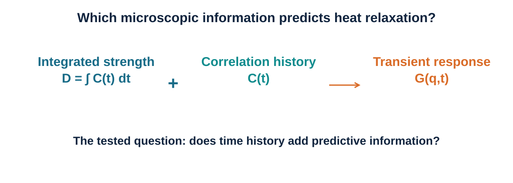
Current history can contain information that an integrated coefficient loses.
A controlled two-field lattice study asks what information predicts relaxation.

Current history can contain information that an integrated coefficient loses.
Stable anharmonic branches exchange energy and allow a tunable mass.
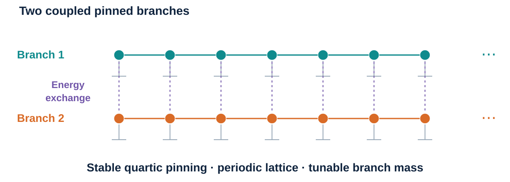
The response matrix separates energy transport from branch-imbalance feedback.
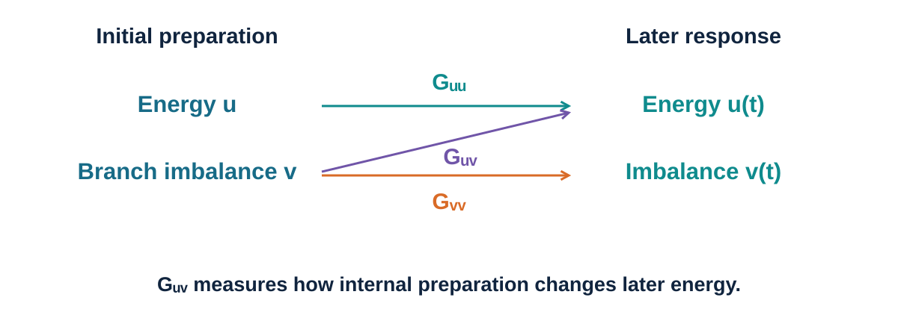
Changing internal preparation changes the later energy response.
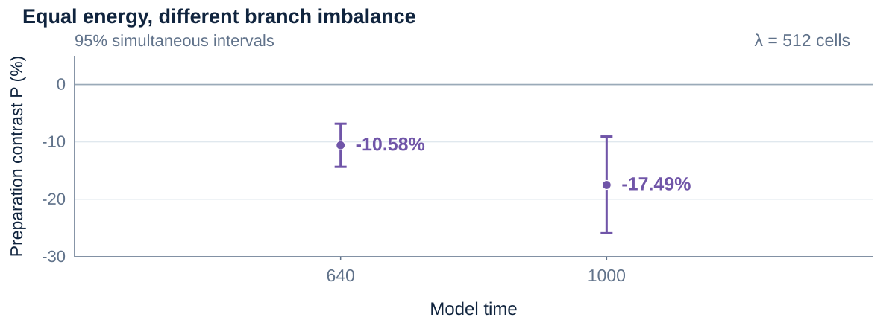
Total energy alone does not specify these tested responses.
The preparation contrast reverses while branch-imbalance response persists.
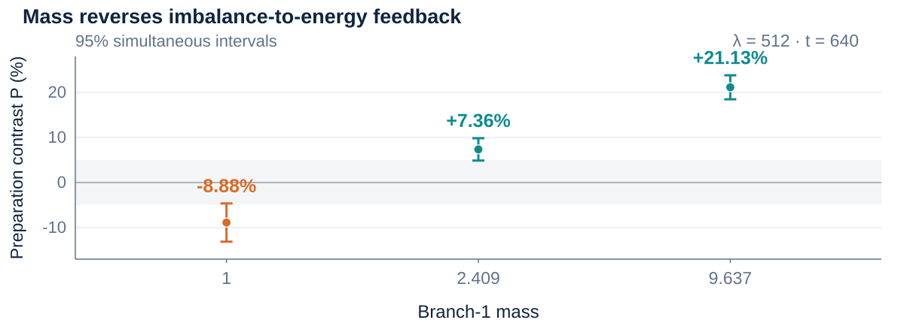
The nominal matching mass does not produce the predicted near-null.
Halving the branch coupling does not remove the observed feedback.
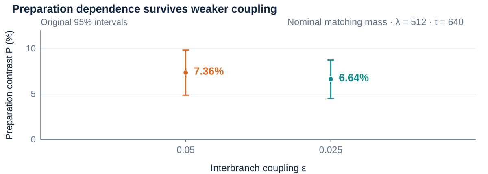
A long-lived branch imbalance can remain visible to energy transport.
Kₜ and Kₓ are leading reference kernels for transport and exchange.
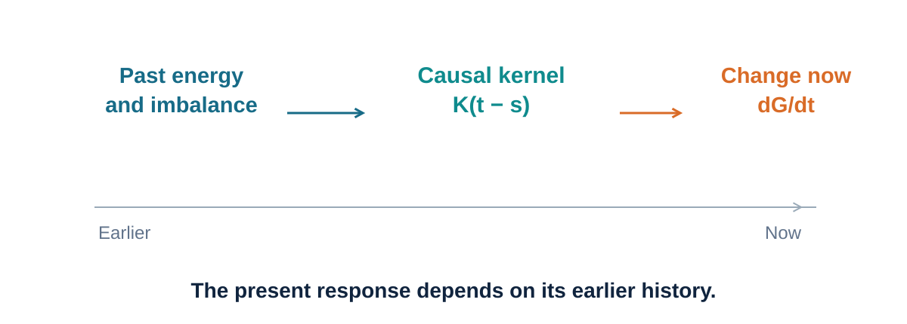
Spatial currents and interbranch exchange contribute different kernels.
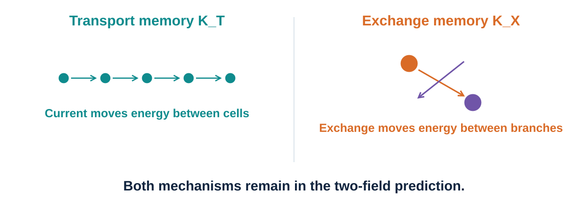
The same exchange memory is retained in both predictions.
The control preserves integrated transport, static fluctuations and exchange.
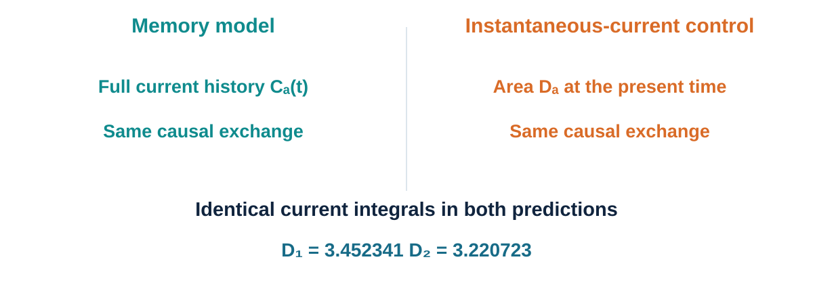
Only the temporal shape of transport current memory changes.
Zero-frequency agreement does not require finite-time agreement.
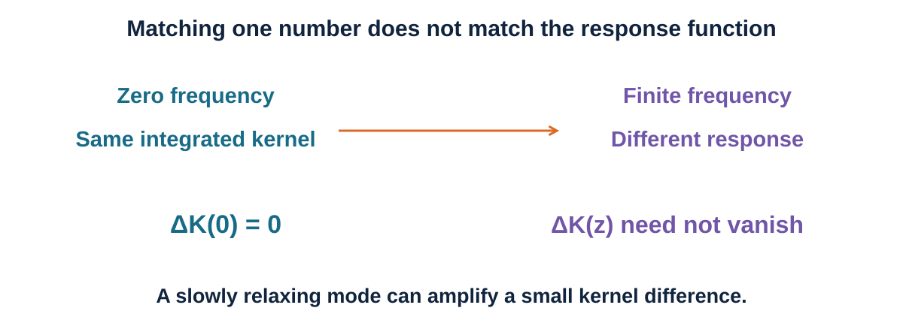
Both predictions are fixed before the new lattice responses are examined.
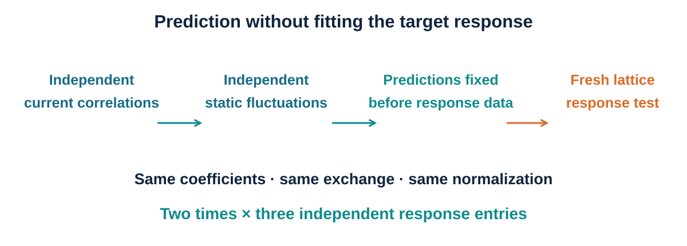
No target response or relaxation rate is fitted.
Energy, feedback and population response are tested at both fixed times.
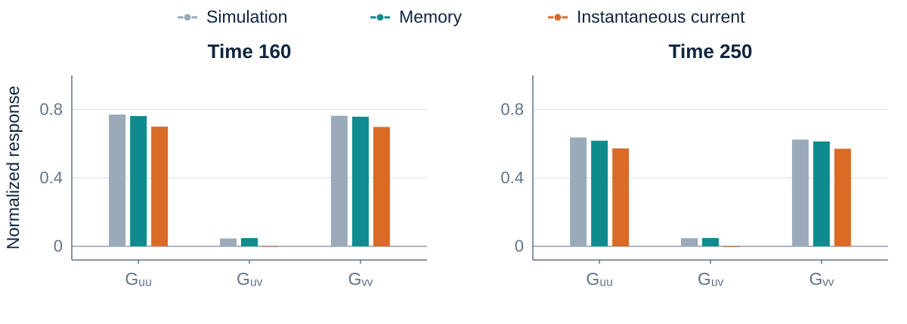
Memory reproduces both diagonal relaxation and cross response more closely.
The instantaneous-current control fails the fixed primary accuracy test.
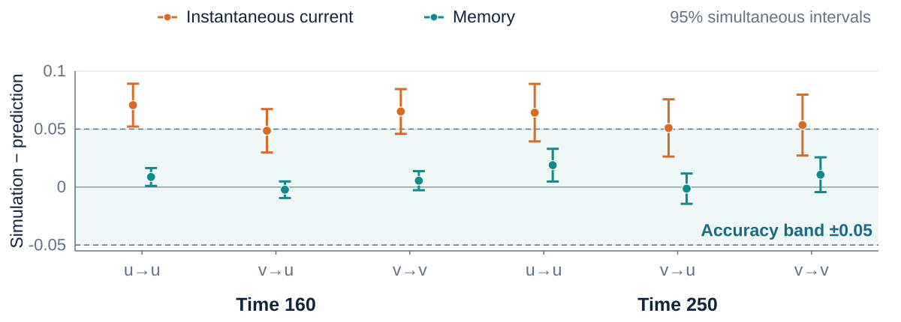
All six memory-model intervals lie inside the ±0.05 accuracy band.
All six covered absolute-error gains are positive.
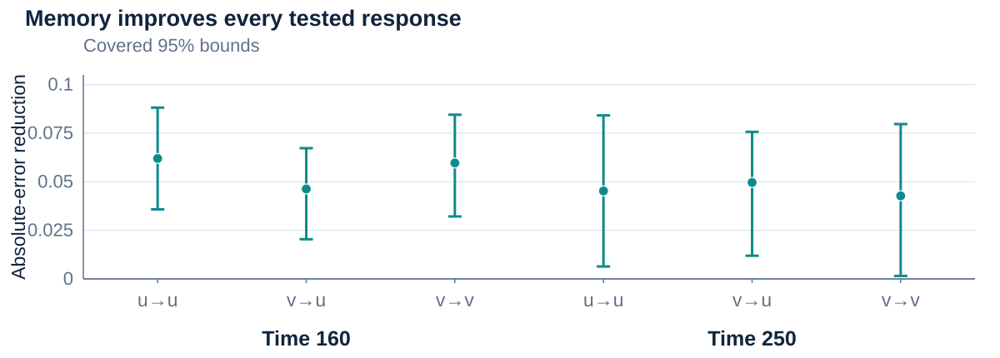
Temporal history adds predictive information beyond the shared integrated coefficients.
Accurate prediction with memory does not imply energy-only transport.
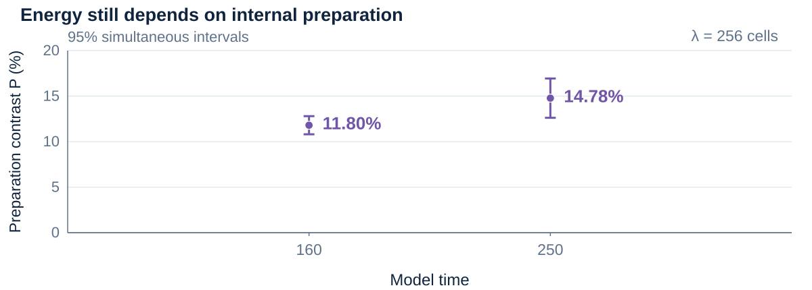
The tested system retains measurable imbalance-to-energy feedback.
A reference forecast finds persistent late-time feedback at about 171 cells.
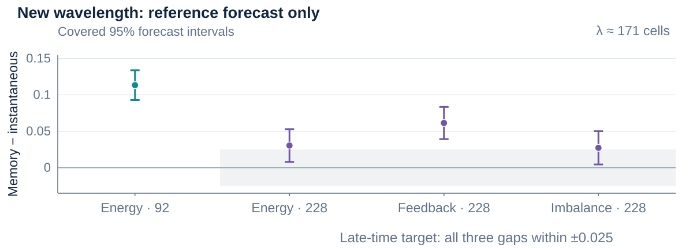
Energy decay alone does not establish that memory has become negligible.
Reference estimates guide a criterion; a physical crossover remains unvalidated.
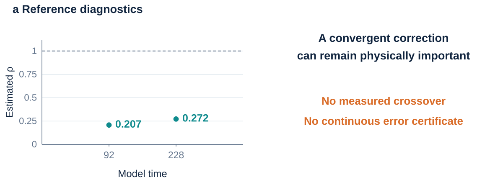
The controlled matched-area test establishes a specific microscopic contribution.
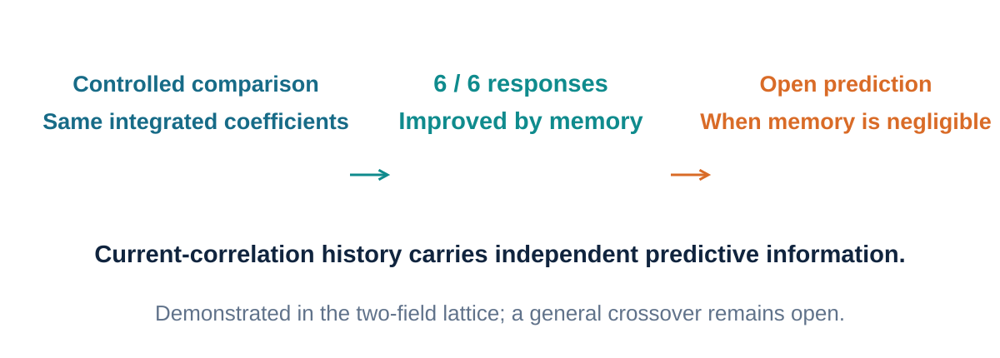
The next scientific target is a transferable boundary for when history can be neglected.